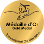
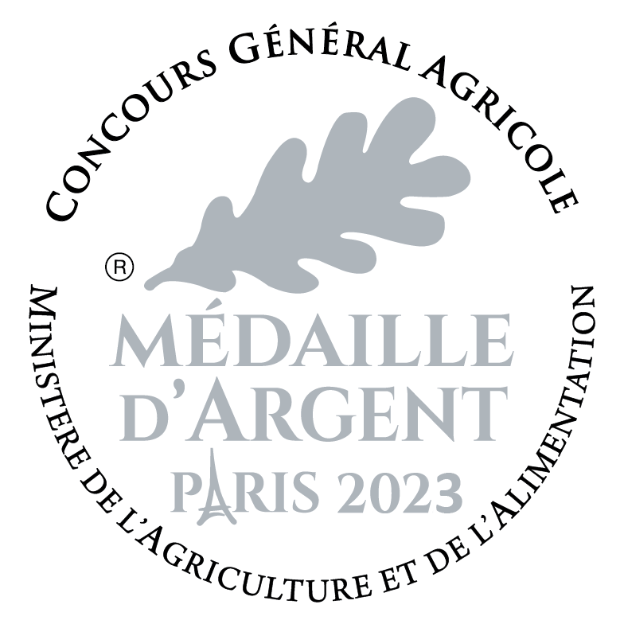
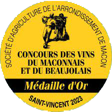

Accueil
Successeur de deux générations de savoir et de passion, nous exploitons 14 hectares de vignes aux expositions diverses, au coeur du Beaujolais. Sur un relief parfois escarpé, nous cultivons le gamay noir à jus blanc, cépage rouge unique des Beaujolais et le Chardonnay.
L'exploitation
Nous exploitons 14 hectares de vignes aux expositions diverses, sur sols granitiques sableux à argilo-sableux. Après les différents travaux effectués tout au long de l'année sur les vignes, les raisins sont cueillis manuellement et vinifiés au domaine par nos soins.

Nos Vins
Où nous Situer
La Vigne
Les Salons
COMPIÈGNE (60) : 35ème Foire aux Vins et Fromage de Compiègne, 1 et 2 Juin 2024 - Place Saint-Jacques (Stand n°60)
ARPAJON (91) : 32ème Salon des Vins et Fromages, 8 et 9 Juin 2024, Sous la halle du marché d’Arpajon
SENLIS (60) : 30ème Salon des Vins, 15, 16 et 17 Novembre 2024, Quartier Ordener 6/8 rue des Jardiniers
ETRECHY (91) : 26ème Marché de Noël, 7 et 8 Décembre 2024 Espace Jean Monnet - Boulevard des Lavandières
Actualités
Notre Côte de Brouilly 2022 a remporté une médaille d'Or au Concours International du Gamay.
Notre Morgon 2022 a remporté une médaille d'Argent au Concours Général Agricole à Paris.
Notre Régnié 2022 a remporté une médaille d'Or à la Saint Vincent de Mâcon.
Contact
846 route de Montmay
69430 Quincié en Beaujolais
Téléphone: 04 74 69 00 42, 06 70 02 86 51
Email: larochethulon@free.fr